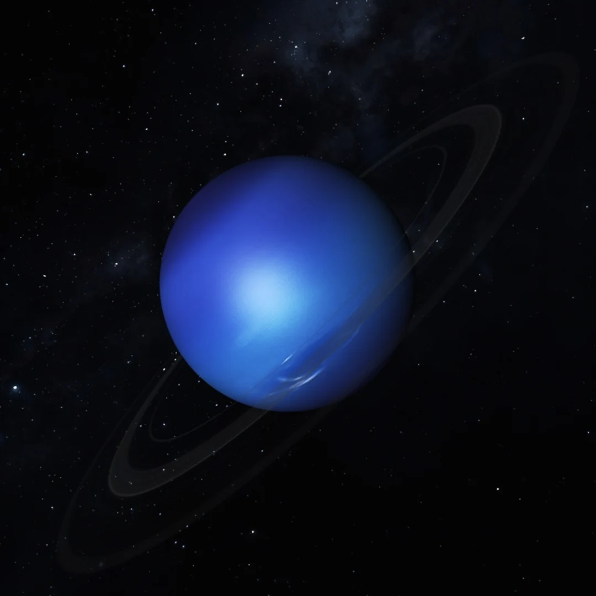
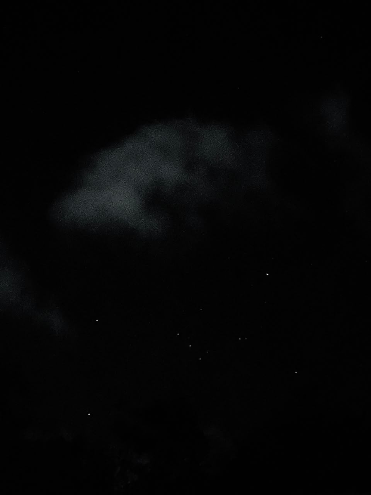

{kind=link}



Halo perkenalkan nama saya Melisa Avenia bisa dipanggil Ave. Minggu lalu saya sudah mengenalkan tentang beberapa hobi saya seperti mendengarkan musik, menonton film dan juga membaca buku (sebenernya lebih suka novel). Nahh tapi dulu saya tertarik banget sama astronomi jadi saya baca beberapa buku tentang planet, alam semesta dan masih banyak lagi, karena perpustakaan SMP saya BESTTTTT BGT super lengkap. Dari SD juga saya pengen bgt jadi astronot tapi mustahil. Setelah SMA dan memilih jurusan saya pengen banget masuk atronomi tapi setelah dipikir - pikir lagi saya ga sanggup kalo harus berhadapan sama fisika, matematika dan segala macamnya. Maka dari itu saya masuk ke informatika di Sanata Dharma setelah menyerah gapyear dan tidak diterima di kampus impian huhuhu.
Setelah saya membaca beberapa buku saya punya planet Neptunus sebagai planet favorit saya. Untuk alasannya banyak sekali dan siapapun juga pasti bisa melihat (dari gambar maksudnya) kalo planet Neptunus itu cantik bgt. Saya juga mempelajari beberapa rasi bintang dan one of my favorites itu ada rasi bintang Carina yang biasanya muncul di bulan Desember - Mei. Ini cukup mudah dilihat tetapi kalo difoto pake hp kadang harus pake aplikasi stargazing hub buat ngehubungin bintangnya biar bentuknya keliatan. Kalo ga pake aplikasi bakal sulit dilihat karena ya kecampur sama bintang - bintang lain disekitarnya. Yang biasanya keliatan jelas banget bentuknya tanpa pake aplikasi itu rasi bintang Orion. Saya sering banget ngefoto Orion ini karena gampang ditandain pake mata telanjang, nanti saya cantumin fotonya yaaa.
| Gambar | Keterangan |
|---|---|
|
 |
Planet Neptunus |
|
|
Rasi Bintang Carina |
|
 |
Rasi Bintang Orion |